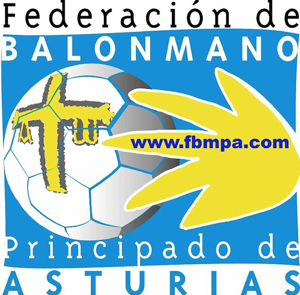

Balonmano
Equipos
Jugador
- Balonmano Base Oviedo - Temporada 08/09 - 20/21
-  Selección Asturiana de Balonmano - Temporada 12/13 - 13/14
- Balonmano Corazón de Maria - Temporada 22/23
- Balonmano Vetusta - Temporada 23/24 - Actualidad
Entrenador
- Balonmano Base Oviedo - Temporada 16/17 - 20/21
Palmarés
Jugador
- 1er Puesto Campeonato de Asturias x 2
- 2do Puesto Campeonato de Asturias x 3
- 3er Puesto Campeonato de Asturias x 1
 6to Puesto Fase Final del Campeonato de Clubes
6to Puesto Fase Final del Campeonato de Clubes- 2do Puesto Torneo Internacional HandGaia
Entrenador
- 1er Puesto Campeonato de Asturias x 3
- 2do Puesto Campeonato de Asturias x 4
- 2do Puesto Torneo Internacional Nazaré - Categoría Alevin
- 3er Puesto Torneo Internacional Nazaré - Categoría Infantil
Categorías Inferiores
Me formé en las categorias inferiores del Balonmano Base Oviedo, desde 2008 hasta 2018, año en el cual ingresé al segundo equipo del club, y obtuve ficha con el primer equipo.
Aunque comencé como jugador de campo, en la temporada 2010-2011 me puse en la porteria, siendo el rol de portero el que mantengo en la actualidad.
Jugador de Balonmano Amateur
Primera División Nacional
Tuve la oportunidad de jugar 3 temporadas en primera nacional con el Balonmano Base Oviedo, donde podría destacar 3 momentos: mi debut como jugador, mi debut en vallobín (ambos en la 18-19) y mi premio a Jugador Ovetus de la jornada.
Segunda División Nacional
Mi primera temporada en Segunda División Nacional coincidió con la de Primera, ya que tenía ficha de para jugar con el primer y el segundo equipo. Salvo la temporada 21-22, en la que no jugué, me he mantenido jugando en esta división, siendo este año mi quinta temporada en la misma.
He jugado con un total de tres equipos en esta división: Balonmano Base Oviedo B (18-19 a 20-21), Balonmano Codema (22-23) y actualmente en el Vetusta B.
Entrenador de Balonmano Base
Una de las experiencias más enriquecedoras que me ha dado el balonmano ha sido la de permitirme formar y ver crecer a chicos y chicas dentro del ambito personal y deportivo.
Comencé a entrenar a equipos benjamines (hasta 10 años), alevines (hasta 12 años) e infantiles (hasta los 14 años) en 2016, en el Balonmano Base Oviedo, tanto categorias másculinas como femeninas. Con el paso de los años, he llegado incluso a compartir equipo con algunos de ellos.